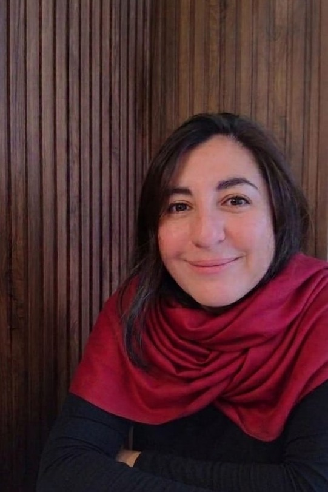

No tienes que tener
todo resuelto
antes de escribirme.
Ese es justamente el punto de partida.
Soy psicóloga educacional y clínica infanto-juvenil, con más de 17 años de experiencia en el ámbito educativo. Acompaño a estudiantes en su proceso de elección vocacional, ayudándoles a tomar una decisión informada y coherente con quiénes son, más allá de la presión externa o la falta de información.
Mi trabajo no consiste en decirte qué estudiar. Consiste en ayudarte a escucharte mejor, a ordenar lo que ya sabes de ti mismo y a distinguir tus propias señales del ruido que te rodea.
Utilizo un instrumento de evaluación que explora intereses, fortalezas personales y el contexto familiar de cada joven, y lo acompaño con sesiones donde construimos juntos un camino de decisión.
Si sientes que estás atravesando este momento con más ansiedad que claridad, me encantaría que conversemos sobre cómo este proceso podría ayudar. Lo mismo si eres papá o mamá y ves a tu hijo o hija bloqueado o bloqueada frente a esta decisión.
Escríbeme cuando quieras.
No hace falta que llegues con las preguntas ordenadas ni con una idea clara de lo que buscas. Podemos empezar desde donde estás.
vsoto.ordenes@gmail.comRespondo personalmente. Sin formularios, sin intermediarios.
